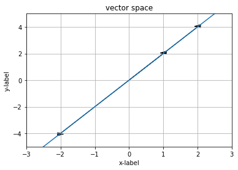
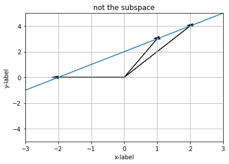
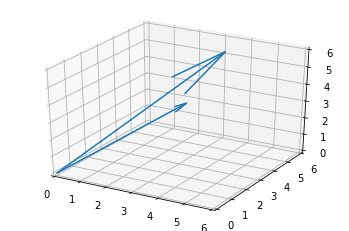
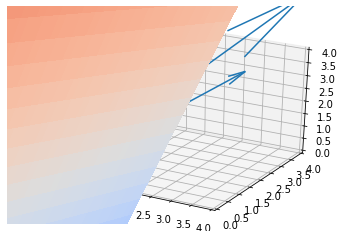

Lesson5到Lesson8的课程笔记。
Lesson 5
- keywords: permutation, transpose, symmetric matrices
- highlight:
- Permutation, $PA = LU$
- Vector spaces and subspaces (the beginning of the linear algebra)
Permutations P: execute row exchanges
if a zero shows up in the pivot position, move it away.
P is an identity matrix with reordered rows.
$$PA = LU$$
the possibility of the rerodering for n$\times$n matrix is O(n!)
$$P^{-1} = P^{T}$$
$$P^{T}P = I$$
- Symmetric matrices S
$$S^{T} = S$$
- for example, $$R = \left[\begin{matrix}2 & 1 \cr 8 & 7 \cr 4 & 1\end{matrix}\right]$$
1 | import numpy as np |
(array([[2, 1],
[8, 7],
[4, 1]]),
array([[2, 8, 4],
[1, 7, 1]]))$$R^{T}R = S$$
1 | np.dot(r, r.transpose()) # which is symmetric |
array([[ 5, 23, 9],
[ 23, 113, 39],
[ 9, 39, 17]])- rule for transpose:
$$(R^{T}R)^{T} = R^{T}R^{TT} = R^{T}R$$
Vector spaces
R^2 = all 2-dim real vectors
R^3 = all vectors with 3 components
R^n = all column vectors with n real components
for example, a vector space inisde R^2, subspace of R^2
1 | import matplotlib.pyplot as plt |

line in R^2 must go through zero vector
because every subspace has got to contain zero
the below case, any line mutiple zero is not in the line.
1 | ax = plt.axes() |

Subspaces of R^2 (3 types)
- all of R^2 (itself)
- any line through, $\left[\begin{matrix}0 \cr 0\end{matrix}\right]$, $L$
- zero vector only, $Z$
n + 1 types of the subspaces of R^n
subspace has to go through zero vector
Column space, $C(A)$
for example,$$\left[\begin{matrix}2 & 1 \cr 8 & 7 \cr 4 & 1\end{matrix}\right]$$
columns are in R^3
all their linear combinations form a subspace
1 | import matplotlib.pyplot as plt # https://www.kuxai.com/post/94 |

$$\left[\begin{matrix}2 \cr 1\end{matrix}\right]a_1 + \left[\begin{matrix}8 \cr 7\end{matrix}\right]a_2 = \left[\begin{matrix}4 \cr 1\end{matrix}\right]$$ ??
1 |
|

Lesson 6
- keywords:column space, null space
- highlight:
- column space of matrix
- null space of matrix
Vector space requirements:
- v + w and cv are in the space
- all combs cv + dw are in the space
subspaces S and T:
their intersection $S\cap T$ is a subspace
Column space of matrix (is not a subspace due to zero vector is not a solution)
it is a plain/line that doesn’t go through the origin
for example, $$A = \left[\begin{matrix}1&1&2 \cr 2&1&3 \cr 3&1&4 \cr 4&1&5\end{matrix}\right]$$
column of A is subspace of R^4
Does $Ax = b$ have a solution for every $b$?
No, 4 equations but 3 unkown. Three column vectors can’t get all vectors in R^4.
Which right hand-sides $b$ allow this system to be solved?
For example, $b$ is a zero vector. Or the combinations of the columns of A.
I can solve $Ax = b$, exactly when $b$ is in the column space of A.
$$\left[\begin{matrix}1&1&2 \cr 2&1&3 \cr 3&1&4 \cr 4&1&5\end{matrix}\right]\left[\begin{matrix}x_1 \cr x_2 \cr x_3\end{matrix}\right] = b$$
A is two dimensional subspace of R^4 since the third column has no attribute.
$$\left[\begin{matrix}1&1 \cr 2&1 \cr 3&1 \cr 4&1\end{matrix}\right]\left[\begin{matrix}x_1 \cr x_2 \end{matrix}\right] = b$$
Null space (is a subspace)
- null space of A contains all solutions to $Ax = 0$
$$\left[\begin{matrix}1&1&2 \cr 2&1&3 \cr 3&1&4 \cr 4&1&5\end{matrix}\right]\left[\begin{matrix}x_1 \cr x_2 \cr x_3\end{matrix}\right] = \left[\begin{matrix}0 \cr 0 \cr 0 \cr 0\end{matrix}\right]$$
$$x = c\left[\begin{matrix}1 \cr 1 \cr -1\end{matrix}\right]$$
check that the solutions to $Ax = 0$ always give a subspace
if $Av = 0$ and $Aw = 0$, then $A(v+w) = 0$
Lesson 7
- keywords: algorithm, elimination
- highlight:
- Computing the null space, $Ax = 0$
- Pivot variables – free variables
- Special solutions
Computing the null space, $Ax = 0$
$$A = \left[\begin{matrix}1&2&2&2 \cr 2&4&6&8 \cr 3&6&8&10\end{matrix}\right]$$
column 2 is a multiple of column one
row 1 plus row 2 equals row 3
it is not independent
when we do the elimination for the rectangular matrix
the null space won’t change because the solution of $Ax= 0$ won’t change.
the column space will change.Step 1, $$\left[\begin{matrix}1&2&2&2 \cr 0&0&2&4 \cr 0&0&2&4\end{matrix}\right]$$
Step 2, $$\left[\begin{matrix}1&2&2&2 \cr 0&0&2&4 \cr 0&0&0&0\end{matrix}\right]$$
$Ux= 0$
It is called echelon form.
The number of the pivot is 2, called the rank of the matrix.
Pivot variables – free variables
- Column 1 and 3 are called the pivot columns, while column 2 and 4 are free columns.
- Pivot variable: rank = 2
- Free variable: n - rank = 2
Special solution
1 and 0 are the free variables (special solution), $$x^{*} = \left[\begin{matrix}-2 \cr 1 \cr 0 \cr 0\end{matrix}\right], c\left[\begin{matrix}-2 \cr 1 \cr 0 \cr 0\end{matrix}\right]$$
0 and 1 are for example here (special solution), $$x^{*} = \left[\begin{matrix}2 \cr 0 \cr -2 \cr 1\end{matrix}\right], d\left[\begin{matrix}2 \cr 0 \cr -2 \cr 1\end{matrix}\right]$$
The solution is, $$x = c\left[\begin{matrix}-2 \cr 1 \cr 0 \cr 0\end{matrix}\right] + d\left[\begin{matrix}2 \cr 0 \cr -2 \cr 1\end{matrix}\right]$$
Reduced row echelon form
- zeros above and below pivots
- pivots are 1
$$\left[\begin{matrix}1&2&0&-2 \cr 0&0&1&2 \cr 0&0&0&0\end{matrix}\right]$$
- $Rx = 0$
The null space solution from reduced row echelon form
Notice the identity part $\left[\begin{matrix}1&0 \cr 0 & 1\end{matrix}\right] = I$ in pivot rows/cols
$$\left[\begin{matrix} \mathit{1}&2&0&-2 \cr 0&0&\mathit{1}&2 \cr 0&0&0&0\end{matrix}\right]$$
Notice the free part $\left[\begin{matrix}2&-2 \cr 0 & 2\end{matrix}\right] = F$ in free rows/cols, and the values are negative in the solution, x
$$\left[\begin{matrix} 1&\mathit{2}&0&\mathit{-2} \cr 0&0&1&\mathit{2} \cr 0&0&0&0\end{matrix}\right]$$
- rref form
$$R = \left[\begin{matrix}I & F \cr 0 & 0\end{matrix}\right]$$ - null space solution
$$N = \left[\begin{matrix}-F \cr I\end{matrix}\right]$$
1 | # python solution for reduced row echelon form |
Matrix : Matrix([[1, 2, 2, 2], [2, 4, 6, 8], [3, 6, 8, 10]])
The Row echelon form of matrix M and the pivot columns : (Matrix([
[1, 2, 0, -2],
[0, 0, 1, 2],
[0, 0, 0, 0]]), (0, 2))1 | import numpy as np |
(Matrix([
[1, 2, 2, 2],
[2, 4, 6, 8],
[3, 6, 8, 10]]),
(Matrix([
[1, 2, 0, -2],
[0, 0, 1, 2],
[0, 0, 0, 0]]),
(0, 2)),
[Matrix([
[-2],
[ 1],
[ 0],
[ 0]]),
Matrix([
[ 2],
[ 0],
[-2],
[ 1]])])1 | # example 2: 4* 3 |
((Matrix([
[1, 0, 1],
[0, 1, 1],
[0, 0, 0],
[0, 0, 0]]),
(0, 1)),
[Matrix([
[-1],
[-1],
[ 1]])])Lesson 8
- keywords: algorithm, elimination
- highlight:
- Complete the solution of $Ax = b$
The column space solution from reduced row echelon form
- augmented matrix from L7’s example,
$$\left[\begin{matrix}A & | & b\end{matrix}\right] = \left[\begin{matrix}1&2&2&2 & | & b_1 \cr 2&4&6&8& | & b_2 \cr 3&6&8&10& | & b_3\end{matrix}\right]$$
$$\left[\begin{matrix}1&2&2&2 & | & b_1 \cr 0&0&0&4& | & b_2 - 2b_1 \cr 0&0&0&0& | & b_3 - b_2 - b_1\end{matrix}\right]$$
then the condition is
$$ b_3 - b_2 - b_1 = 0$$then one example of b is
$$\left[\begin{matrix}1&2&2&2 & | & 1 \cr 0&0&0&4& | & 3 \cr 0&0&0&0& | & 0\end{matrix}\right]$$
Solvability condition on $b$
When b is in $C(A)$
If a comb of rows of A gives zero row, then same comb of the entries of B must give zero.
To find complete solution to $Ax = b$
- $x_{particular}$:
- Set all free variables to zero.
- Solve $Ax = b$ for pivot variables.
\begin{cases}
x_1 + 2x_3&= 1 \
3x_3&= 3
\end{cases}
$$x_p = \left[\begin{matrix}-2 \cr 0 \cr 3/2 \cr 0\end{matrix}\right]$$
- $x_{nullspace}$: What we got in the last lesson.
$$Ax_p = b$$
$$Ax_n = 0$$
- The complete solution is
$$x = x_p + x_n$$
$$x = \left[\begin{matrix}-2 \cr 0 \cr 3/2 \cr 0\end{matrix}\right] + c_1 \left[\begin{matrix}-2 \cr 1 \cr 0 \cr 0\end{matrix}\right] + c_2 \left[\begin{matrix}2 \cr 0 \cr -2 \cr 1\end{matrix}\right]$$
It is not a subspace.
It is a flat shifted away from the origin subspace.
All of $x$, $x_p$ and $x_n$ are vectors.
1 | import numpy as np |
(Matrix([
[1, 2, 2, 2],
[2, 4, 6, 8],
[3, 6, 8, 10]]),
(Matrix([
[1, 2, 0, -2],
[0, 0, 1, 2],
[0, 0, 0, 0]]),
(0, 2)),
[Matrix([
[1],
[2],
[3]]),
Matrix([
[2],
[6],
[8]])])m by n matrix A of rank r
$$Ax = b$$
- r <= m, r <= n
- Full column rank means:
- r = n;
- all columns have pivots;
- no free variables;
- $N(A)$ is only zero vector;
- $x = x_p$, unique solution, if exits (b is in the column space of A).
- Full row rank means;
- r = m;
- all rows have pivots;
- can solve $Ax=b$ for every b;
- left with n - r free variables
1 | # full column rank |
Rref is (Matrix([
[1, 0],
[0, 1],
[0, 0],
[0, 0]]), (0, 1))
and its null space solution are []
and its column space solution are [Matrix([
[1],
[2],
[6],
[5]]), Matrix([
[3],
[1],
[1],
[1]])]1 | # full row rank |
Rref is (Matrix([
[1, 0, -4/5, -3/5],
[0, 1, 17/5, 14/5]]), (0, 1))
and its null space solution are [Matrix([
[ 4/5],
[-17/5],
[ 1],
[ 0]]), Matrix([
[ 3/5],
[-14/5],
[ 0],
[ 1]])]
and its column space solution are [Matrix([
[1],
[3]]), Matrix([
[2],
[1]])]r = m = n
- $R = I$
- 1 solution to $Ax = b$
r = n < m
- $R = \left[\begin{matrix}I \cr 0\end{matrix}\right]$
- 0 or 1 solution. (if b is in cols of A, then 1 solution)
r = m < n
- $R = \left[\begin{matrix}I&F\end{matrix}\right]$, $F$ could be sort of partly into $I$
- always has solution, $\infty$ solutions.
r < m, r < n
- $R = \left[\begin{matrix}I &F \cr 0 & 0\end{matrix}\right]$
- 0 or $\infty$ solutions.